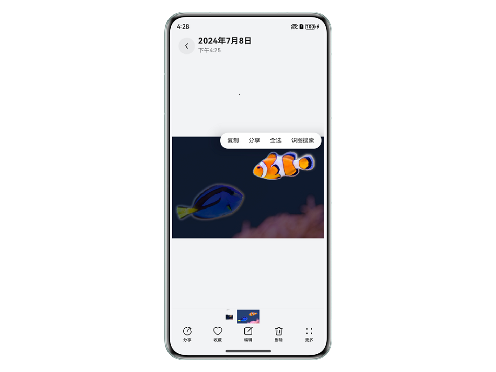
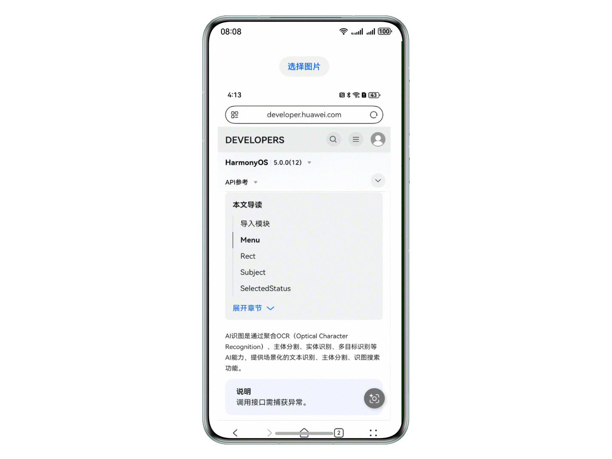

With the rapid development of artificial intelligence, AI image recognition has become one of the core capabilities that enables smart devices to perceive the physical world. This section analyzes how HarmonyOS uses AI image recognition to reshape image processing from the perspectives of use-case implementation and technical realization, providing developers and users with a more efficient, accurate, and natural interactive experience.
As a representative of next-generation smart operating systems, HarmonyOS is redefining the boundaries of intelligent image processing with its powerful ecosystem and advanced AI capabilities. AI image recognition is one of HarmonyOS's key features. It integrates cutting-edge technologies such as OCR (optical character recognition), subject segmentation, entity recognition, and multi-object recognition to provide users and developers with an unprecedented intelligent experience.
Intelligent Interaction, Transforming the Traditional Experience
AI image recognition can easily process static images, paused video frames, and images in custom rendering scenarios, providing users with a seamless intelligent interaction experience. Whether extracting text from an image or recognizing and segmenting subjects in an image, AI image recognition completes tasks with high accuracy and speed, fundamentally changing traditional image processing.
Broad Use-Case Coverage to Meet Diverse Needs
Text recognition: Users only need to long-press text in an image to quickly extract and copy it, or trigger quick actions for entities such as phone numbers, email addresses, and URLs (for example, calling a number or sending an email directly).
Subject segmentation: Users can long-press a subject in an image to segment it precisely and easily copy, share, or search for it.
Image-based search: Using the cutout feature, users can search based on subjects in an image and quickly obtain relevant information. For example, plants, animals, and buildings can be recognized, with search results presented using intuitive icons.
Developer-Friendly for Rapid Integration and Innovation
For developers, HarmonyOS's AI image recognition provides easy-to-use APIs and components (such as VisionImageAnalyzer), and supports rapid integration into various applications. Whether for smart albums, security monitoring, or retail management, developers can use AI image recognition to provide smarter services and significantly improve application competitiveness.

AI image recognition primarily relies on deep learning models and powerful server-side computing. When an application invokes this capability, a series of pretrained algorithms analyze the input image. These features are powered by complex neural network architectures trained on large amounts of data to accurately understand and interpret visual content. To balance performance and accuracy, some tasks may be completed locally on the device, while others are processed on cloud servers (such as image-based search).
Multi-Feature Integration for Greater Efficiency
AI image recognition supports basic operations such as text recognition and subject segmentation, as well as multi-object recognition and intelligent interaction features such as AIButton. Details are as follows:
Multi-object recognition can simultaneously detect various objects in an image, including scenery, animals, plants, buildings, trees, faces, tables, and text, and draw boxes around them.
AIButton is a user interface component that integrates multiple intelligent recognition and operation features. It is displayed dynamically based on image content (AIButton appears only when the image contains text and the text area exceeds 5% of the image area). It is primarily used to improve user efficiency and experience when processing image content. Its main functions include:
|
Capability |
Trigger Condition |
Description |
|---|---|---|
|
Entity Recognition and Quick Actions |
Visible underlines for entities such as phone numbers, email addresses, URLs, addresses, and times |
When an image contains these types of text information, AIButton marks them with visible underlines. Clicking a mark opens the corresponding quick action menu (such as calling a number, sending an email, or opening a URL). |
|
Original Image Translation |
Translation when the system language differs from the language of the text in the image |
If the system's current language differs from the language of the text in the image, AIButton can translate the image text into the current system language. |
|
Table Extraction |
Appears when the image contains a table |
When an image contains a table, AIButton provides a function for extracting table data, allowing users to quickly obtain the table content. |

Developer Innovation for an Intelligent Application Ecosystem
The main switch for AI image recognition is available in the basic component API list. Developers only need to use the enable interface provided by a basic component to turn on the feature. Currently supported basic components include Image、Video、XComponent, which support image recognition for static images, paused video frames, and custom rendering scenarios, respectively.
In addition, HarmonyOS provides VisionImageAnalyzer (an AI image recognition component). Developers can use it with the Image, Video, and XComponent components to easily implement diverse image recognition features:
To help developers better master AI image recognition and text recognition, HarmonyOS provides a wealth of learning resources:
|
Resource Type |
Resource Name |
Description |
|---|---|---|
|
Video Courses |
Use examples to help developers quickly get started with text recognition |
|
|
Explain visual AI capabilities in specific scenarios in depth and help developers implement scenario-based visual services |
||
|
Codelabs Courses |
Covers basic capabilities such as text recognition and subject segmentation |
|
|
Focuses on scenario-based applications and provides comprehensive guidance from theory to practice |
All courses include complete source code and source code links. Developers can download, study, run, and view the actual results at any time. Open source code not only lowers the learning barrier but also lays a solid foundation for developers to build intelligent, efficient applications.
To make better use of image recognition, we offer the following suggestions:
The AI cutout feature in the HOMS client (HUAWEI Developer World app) uses the Image component to provide accurate image recognition and cutouts for static images. Users only need to tap the AI cutout card on the experience page in the HUAWEI Developer World app to enter the details page, then long-press an entity in an image to recognize and cut it out. Recognized entities can be easily copied and shared. The app also provides a source code preview, allowing developers to copy and use the code directly and greatly improving development efficiency.
Key Development Points
After these steps, the Image component can recognize and cut out entities in an image. Users can long-press an entity in an image to recognize it, then easily copy or share the result.
This text and image creation workflow mainly uses Photo Picker to select local images, then intelligently processes them (extracting content through OCR text recognition, intelligent cutouts, and so on). During subsequent creation, content can be freely transferred for continuous editing, and album or camera content can be obtained across devices. For details, see the best practice Efficient AI-Assisted Creation of Text and Image Content.
The AI capabilities used here mainly include OCR text recognition and intelligent cutouts. After selecting images, users can browse them, long-press objects to create cutouts, and recognize text in images for subsequent text editing.
Key Points
AI image recognition is rapidly changing how we interact with images. HarmonyOS supports this transformation through its powerful Vision Kit and AI image recognition features. From text recognition and subject segmentation to multi-object recognition, AI image recognition not only significantly improves the user experience but also provides developers with rich tools and APIs to enable intelligent upgrades across industries. As the technology continues to evolve, AI image recognition will bring more intelligent and convenient experiences to our lives and work, opening a new era of intelligent image processing.